Lokal
Node.js 24 LTS (disarankan) atau Node.js 26 sesuai ^24.0.0 || ^26.0.0, Git, npm, dan Chromium. Tidak perlu secret.
Runbook
Buka materi offline tanpa menyiapkan akun. Untuk mempraktikkan aplikasi, pasang dependensi. Untuk cloud agent dan Pages, cek izin repo terlebih dahulu.

flowchart TB
start["Pilih lingkungan latihan"] -->|Pakai laptop tanpa GitHub| local["App lokal + materi offline"]
start -->|Pakai akun personal| personal["GitHub Issue, PR, Actions jika diizinkan"]
start -->|Pakai tenant organisasi| org["S06 konektor dan S14 policy"]
personal -->|Periksa plan dan izin| policy{"Copilot aktif?"}
org -->|Periksa policy dan budget| policy
policy -->|Ya: jalankan dengan gate| live["Demo GitHub di repo latihan"]
policy -->|Tidak: pakai bukti lokal| local
classDef gate fill:#fff2dc,stroke:#955b17,color:#5b3711
class policy gateNode.js 24 LTS (disarankan) atau Node.js 26 sesuai ^24.0.0 || ^26.0.0, Git, npm, dan Chromium. Tidak perlu secret.
Tambahkan GitHub CLI dan GitHub Actions. Periksa akun, izin tulis, dan ketersediaan Copilot. S06 pakai Issue.
Pemilik tenant mengizinkan policy dan budget, lalu mengatur konektor. Jangan memakai data atau repo produksi.
Buka terminal di root repo. Gunakan tag v0-baseline jika tersedia.
npm ci
npx playwright install chromiumPada hasil clone GitHub biasa, v0-baseline adalah tag dan demo/claim-date disimpan sebagai remote branch. Jangan jalankan ref yang tidak kamu tinjau.
git fetch origin --tags
git branch --track demo/claim-date origin/demo/claim-dateBuka 127.0.0.1:3000 dan :3001. Kirim Taksi bandara Rp250.000 bertanggal besok; versi after menolak. Ctrl+C untuk menghentikan keduanya.
npm run demo:compare -- demo/claim-dateScript screenshot memakai port sementara pada localhost; perubahan hanya mengenai data demo dalam memori.
npm run shots -- S04
npm run resetJika checkout berasal dari ZIP/template tanpa tag, npm run dev tetap menjalankan app. Untuk perbandingan dua ref, gunakan clone repo lengkap.
npm run reset untuk melihat instruksi, lalu npm run demo:before. Perintah reset biasa tidak me-restart server otomatis. Saat diuji, daftar Employee 01 berubah 7 → 8 → 7 klaim setelah restart.npm run reset -- --fresh dari root repo. Buka path checkout terpisah yang dicetak di terminal. Checkout baru berada pada tag v0-baseline; pekerjaan yang sudah ada, branch, dan remote tetap utuh.demo/workshop. CI yang sudah ada bisa diulang dengan gh run rerun 45567707475 -R sandy-demo/AgenticSDLC lalu gh run watch 45567707475 -R sandy-demo/AgenticSDLC. gh workflow run ci.yml tidak bisa dipakai karena belum ada pemicu manual. Lihat run yang lulus.AGENTIC_WORKSHOP_LIVE hanya saat latihan.Prasyarat dan langkah admin di repo (setelah publikasi) · Langkah untuk semua skenario.
Cek plan, kebijakan pemilik repository dan apakah cloud agent diizinkan. Sementara itu pakai bukti lokal S04.
Periksa git branch -a dan git tag. ZIP tidak berisi history; gunakan npm run dev bila hanya ingin mencoba baseline.
Periksa variabel, izin, dan token melalui UI pengaturan. Jangan tempel secret ke chat atau commit. Pakai materi offline untuk melanjutkan.
Hentikan server yang kamu jalankan dari terminalnya. Screenshot memakai port dinamis; tidak menghentikan proses lain.